The prototype runs 1,000 participants on 126 staff at ratios leaner than the closest published benchmarks: 1:42 CRC (vs the 1:15–1:30 site-based industry anecdote), 1:12 RN (strict end of hospice's 1:12–1:14 — the closest in-home-nursing analogue, since no DCT standard exists), and 1:71 INV (no industry comparator).
Modeled scheduler-side capacity reclaim: $1.7–3.2M/yr.
Combined with a strategic shift to a 6-metro footprint and rebuilding the company around the optimizer engine as operating-model substrate, modeled total impact reaches $50–135M/yr — roughly 70–190% of Science 37's last-reported FY2022 revenue.
How Visit Operations Platform began, what we ran into, and what it became.
Visit Operations Platform started as a question, not a system. Could a single tool coordinate mobile clinicians across multiple metros, multiple studies, and a thousand enrolled participants — without making the schedulers' lives harder? Existing tools were built for in-clinic scheduling, not decentralized trials. The shadow Excel where the team actually did the work was a clear signal that the existing system had failed. The deeper insight that fell out of the build: the scheduler isn't a feature, it's the engine — and a company built around it operates differently than a company built around a study-management platform with scheduling bolted on.
The hardest part was learning what couldn't be compromised. License safety couldn't be a warning — it had to be a hard rule. Drive time couldn't be an afterthought — it had to be a first-class input on every match. Multi-role visits couldn't sit on the calendar as one block — they had to be slice-aware, role by role. Each of these started as an "if we have time" feature and became a non-negotiable.
We resolved the complexity by making the roster the foundation. Every booking, conflict check, and coverage decision joins back to a single roster table — role, home city, state licensures, study training. The matching engine reads from that table; the calendar, optimizer, audit, and request triage all read from the same source of truth. No duplicated state, no gaps where one part of the system trusted different facts than another.
The shipped product moves the work that used to take two schedulers per study down to one — with the engine doing the routing, matching, and conflict resolution. The next move is to expand the engine to adjacent operational surfaces — timesheets, payroll, training records — that today live in separate tools but share the same roster.
The discovery research that named the problem, and the concept validation work that confirmed the design answered it. Two bound deliverables.
What schedulers, RNs, CRCs, and investigators actually do today — the shadow Excel, the license-safety gap, the slice-level data model, and the audit problem. The four findings that became the four product principles.
Open the PDF Concept validationRound-two interviews against the shipped concepts. Thesis confirmed, discovery gaps closed, two new gaps in the queue. The framework that decides what ships next vs. what waits.
Open the PDFVisit Operations Platform — eleven shipped surfaces, one source of truth. The visual walk and the design rationale behind every decision.
Visit Operations Platform is a vertical product. Every feature exists because a real human — scheduler, manager, clinician, sponsor — has a specific job and a specific frustration. The calendar canvas is the home base. Optimize Day shrinks a nurse's drive time with a 2-opt route optimizer. Smart Match books an RN, CRC, and investigator together with one click. Quick Book lets a scheduler book a visit without leaving the keyboard. Coverage Insights resolves time-off requests in batch. Audit records every change with an undo for bulk actions.
The full case study walks all eleven surfaces in narrative order — the calendar, the role timeline, optimize day, quick book, the new-appointment form, the request triage, smart-match panels, coverage insights, the roster, audit, and the appointment detail panel. Below: six of those surfaces summarized as cards, then the complete UI gallery, then the case-study PDF link.
Filter first, focus second. Search across the full network, drop chips for provider / study / state / role, and the calendar collapses to just the work that matters this morning.
An AFIB-301 screening is RN on-site 90 min, CRC dialing in for the middle 60, investigator for the final 30. The calendar shows each role's exact slice — not the whole appointment block.
Treats a nurse's day as a Travelling Salesman instance anchored at her home. Nearest-neighbor seed, 2-opt local search, before/after diff. One click to accept the shorter route.
Linear/Figma-style palette. Type a participant ID, study, and time. An appointment is created in seconds. Built because schedulers do dozens of bookings a day and slow point-and-click is a tax on throughput.
The matching engine filters by study trained, state licensure, and slot availability — then ranks by drive distance from home to the participant. The scheduler sees the top match and the reasons, books all three in one click.
Auto-classifies the queue: 65 have no coverage impact (one-click approve), 22 collide with confirmed visits but a nearby licensed RN can swap in (one-click reassign), 2 are blocking and require an explicit reschedule.
Click a thumbnail to open the full screenshot.
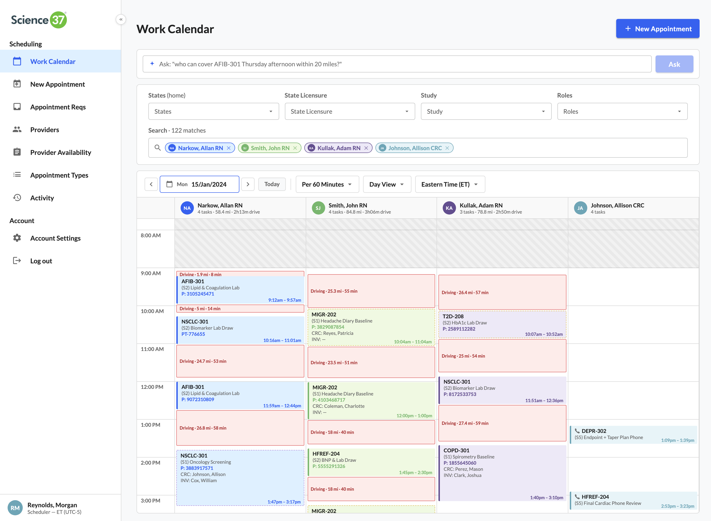
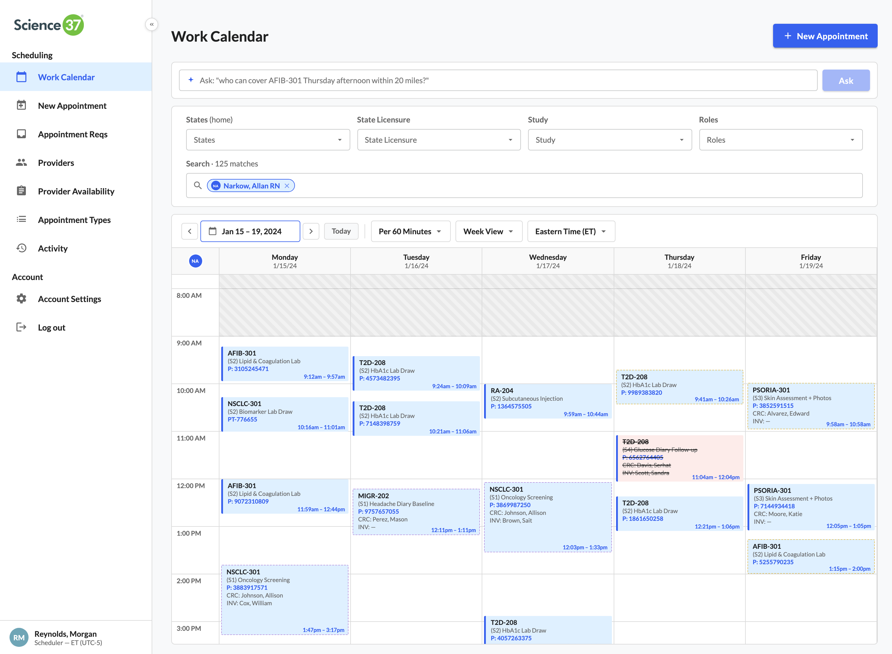
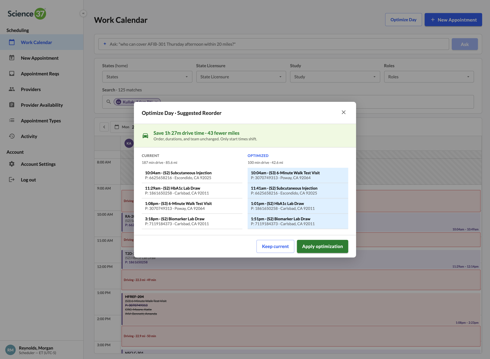
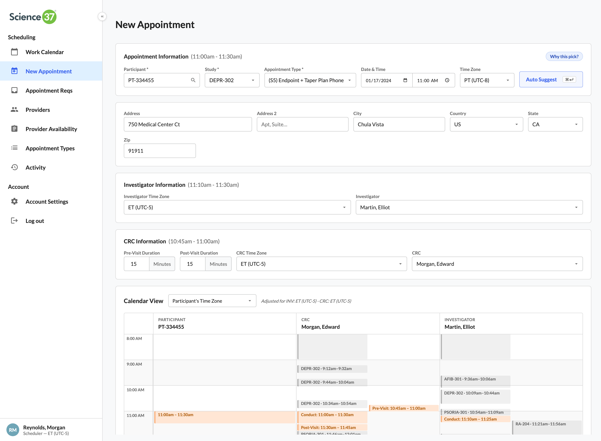
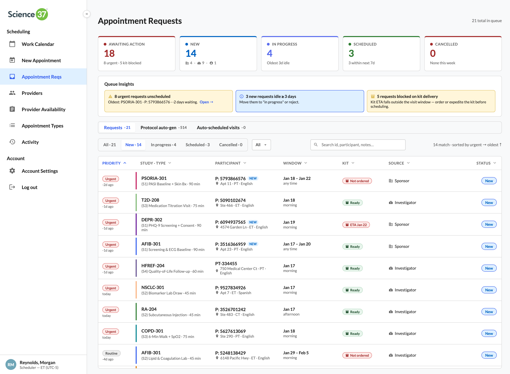
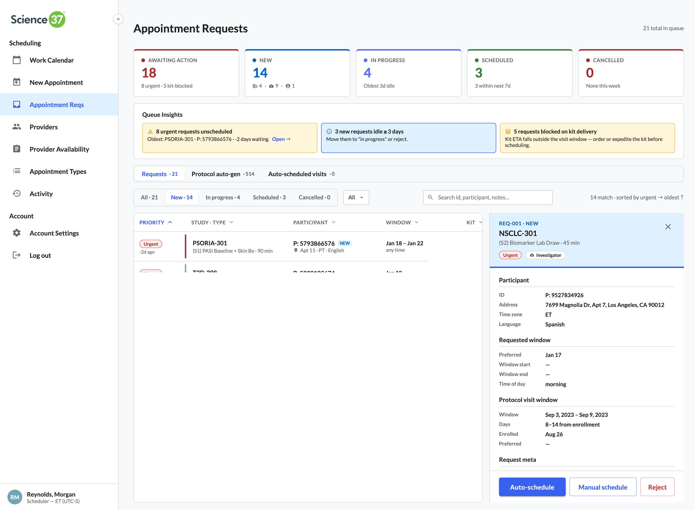
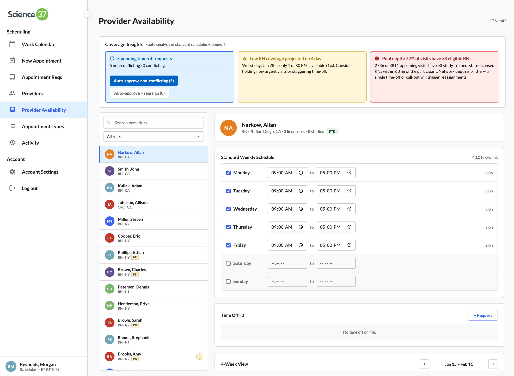
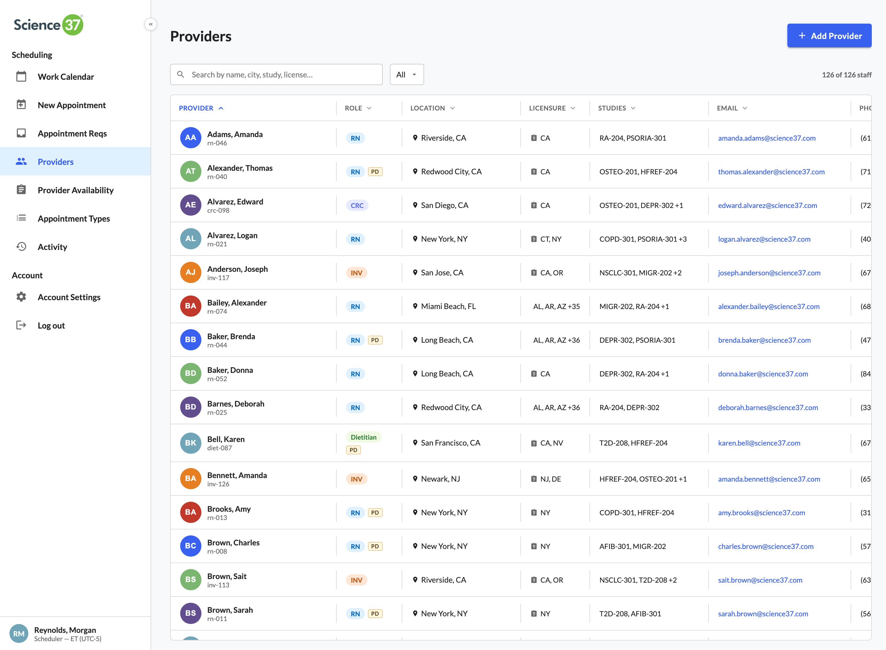
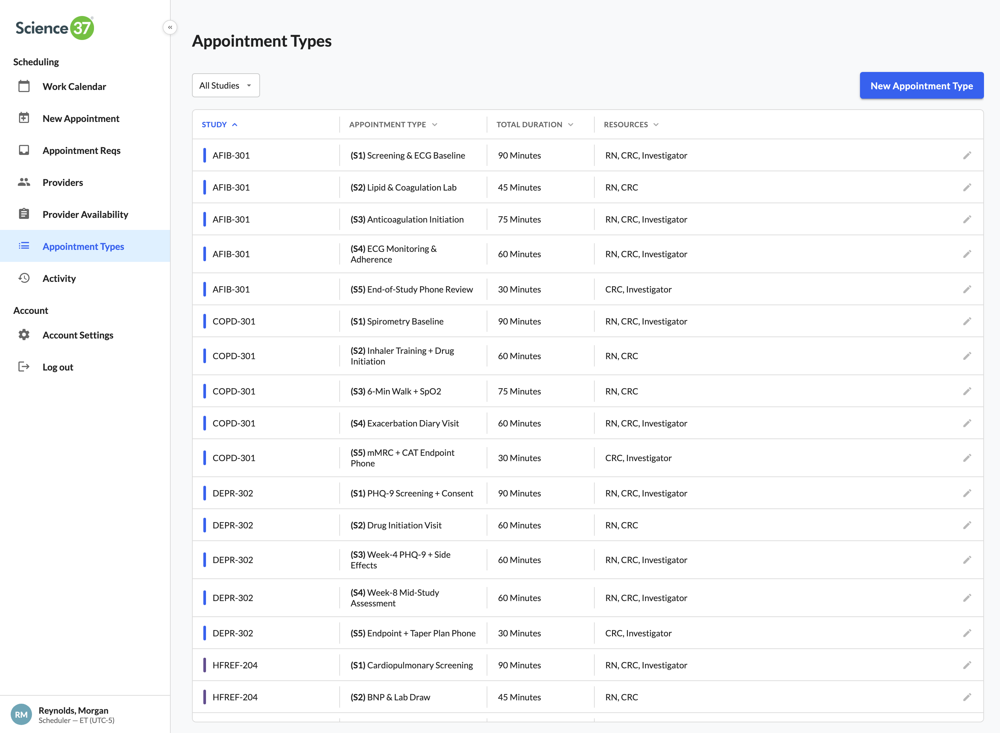
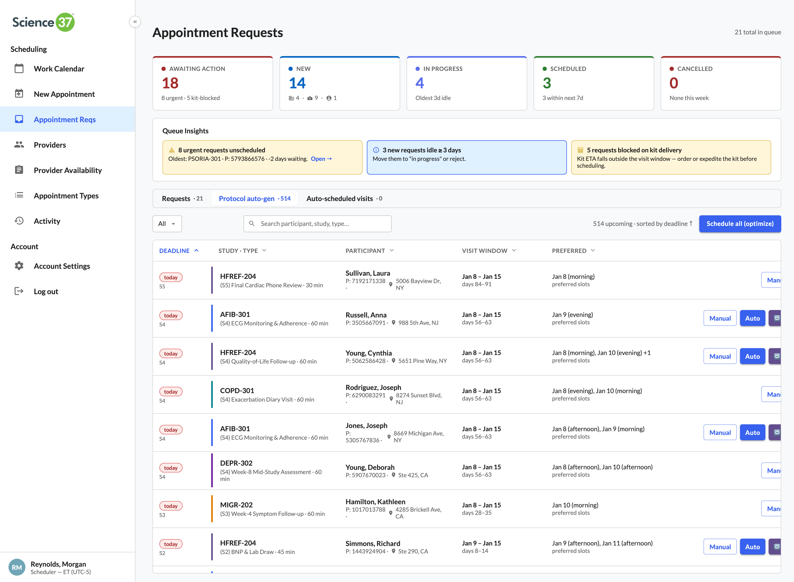
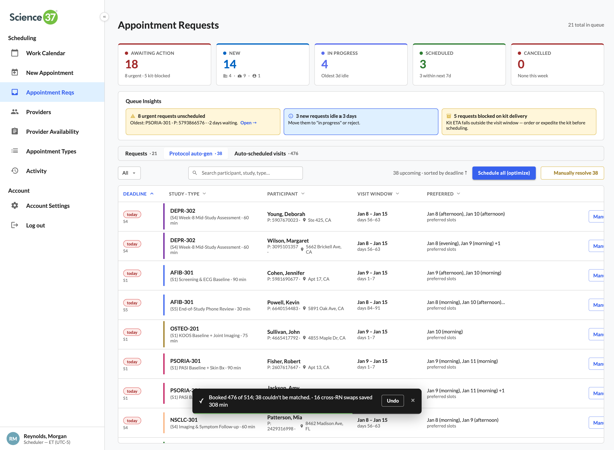
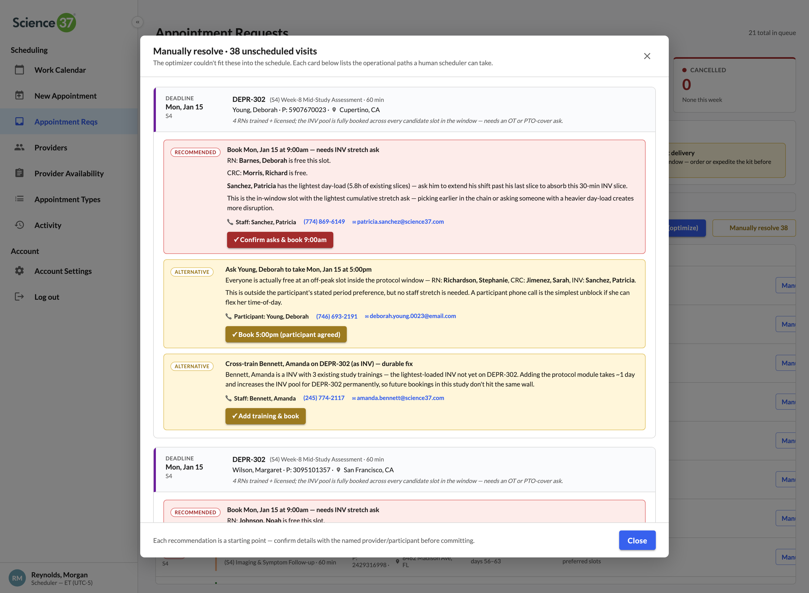
Why a single roster table sits underneath the calendar, the optimizer, the matcher, and the audit — and what changes when you make that the foundation.
Most scheduling systems treat the roster as a directory. A list of names you scroll. Visit Operations Platform treats it as a query target — every booking, conflict check, and coverage decision joins back to it. The matching engine asks the roster: who is study-trained on AFIB-301, licensed in California, free at 2pm next Tuesday, and within 90 minutes of the participant's address? The roster answers in milliseconds because that's the shape of the data.
Four product principles fall out of this decision. Built for operations — every UI surface maps to a real role and a real frustration. Designed for trust — license safety is a hard rule, not a warning. Architected for scale — the roster is the only place state lives, so the system stays consistent as it grows. Audit as a query, not a feature — every action is recorded the same way, so a regulatory request becomes a filtered read instead of a forensic dig.
The architecture document below walks the system end-to-end — entity model, the matching engine as a query, the optimizer as a bounded service, the audit log as a read-side projection, and the integration surface for sponsor portals and patient self-service.
Staff-to-participant ratios established by the prototype against the closest published benchmarks, and the modeled financial impact of building Science 37 around the optimizer engine.
Coordinator-to-participant ratio in the prototype, vs the 1:15–1:30 site-based industry anecdote. No published association standard exists.
Nurse-to-participant snapshot ratio in the prototype. Sits at the strict end of hospice nursing benchmarks (NHPCO 2024); no DCT operator publishes a comparable figure (peer-reviewed, Johnson & Marsh 2023).
Investigator-to-participant ratio in the prototype. No industry comparator exists — slice-based occupancy keeps INVs available only for the ~30 min mid-visit window protocol actually requires.
Modeled total annual impact of an engine-first operating model: $1.7–3.2M/yr scheduler-side capacity reclaim plus $48–132M/yr metro-focus revenue uplift at a 6-metro footprint. Roughly 70–190% of Science 37's last-reported FY2022 revenue.
The prototype isn't a feature — it's a substrate. Two analyses size what an engine-first operating model is worth at Science 37 scale, with primary-source citations throughout.
When the first trains were built, no one started by designing the carriages. They built the engine first — because without it, everything else is architecture for something that doesn't move. Science 37, today, is the carriages. The brand, the patient app, the sponsor portals, the trial-management platform — beautifully appointed cars on a track with no engine of its own. The scheduling tool is bolted on as a feature.
The proposal that fell out of this prototype is the inverse: rebuild Science 37 around the optimizer engine, with every other system — pharma intake, recruitment, hiring, sponsor pricing — as a downstream consequence. The prototype establishes the engine. The market analysis sizes what the engine is worth. Together they make the case that a $1.05B → $38M collapse wasn't a demand failure — it was a structural mismatch between the cost base and the operating reality, and the engine is the structural fix.
Both documents source every numeric claim to a primary URL — SEC filings, peer-reviewed papers (Tufts CSDD–Medable PACT, PMC CRC workload survey, Johnson & Marsh 2023 on DCT nursing), BLS and Salary.com wage data, BCC Research and Mordor Intelligence market sizing, and Science 37's own quarterly press releases. Modeled estimates are clearly labeled as derived figures with their input assumptions shown.
Engine-first operating-model proposal. Train-engine thesis, before/after operational comparison, $50–135M/yr combined annual opportunity, CRC + RN staff-to-participant ratios with adjacent-benchmark sourcing, future-state scope (engine extends to hiring, SLA pricing, retention).
Open the PDF Market analysisSci 37's $1.05B → $38M collapse against the $8.8B → $18.8B DCT market. Two ROI questions answered with cited inputs only — scheduler-side time savings and metro-focus revenue uplift. 19 numbered citations, every figure traceable to a primary source.
Open the PDF